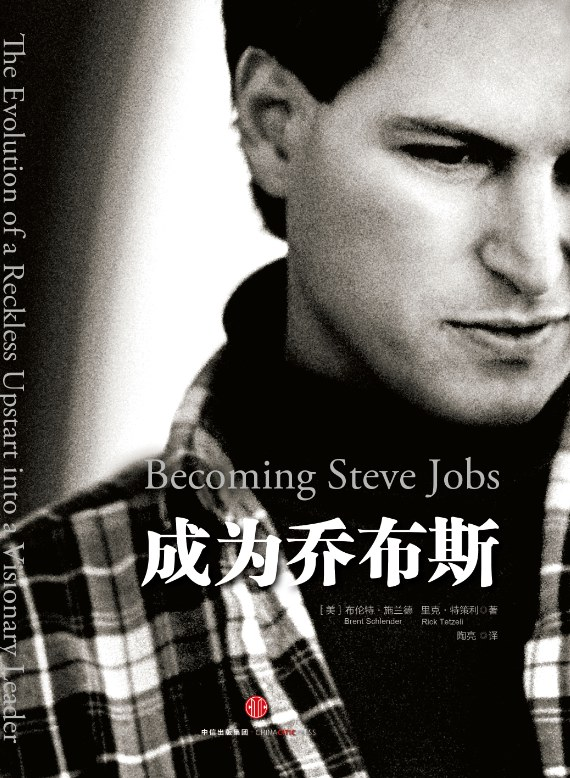

程序员读《成为乔布斯》
他的故事不是成功的故事，而是成长的故事。他从一位杰出的艺术家成长为杰出的企业管理者。
这也许是对乔布斯的一生最为贴切的概括。

乔布斯是Apple辉煌的缔造者，Apple是乔布斯能够发挥光辉的舞台，两者之间是互相成就。
乔布斯的生涯大概可以分为三个阶段，这篇读后感就从这三个方面讲起吧，我们作为一个程序员从这三个方面可以学到很多不同的东西。
乔布斯1.0
这个时期是乔布斯人生中最为理想主义、浪漫主义的时期，也是最荒诞不经、饱受诟病的时期，虽然这个时期的乔布斯完全称不上是一位成功的企业家，但确实一位实实在在的创造者。
乔布斯的家庭
乔布斯出生于1955年的旧金山，出生没多久他的父母就把他给了一对中产阶级的夫妇收养，虽然他的养父母拼尽全力让他进入了大学读书，但是就像其他名人的传奇一样 —— 中途辍学了。
乔布斯正因为成长在这样一个家庭中才能有了后面诸多的成就。
养父母给予他足够的关怀与赞赏，使他长大后依然对自己拥有绝对的自信（甚至是超过常人的自负），从这里我们可以学到一点，就是为人父母以后一定要给予孩子足够的爱，并且要进行赞扬式教育。
另外一点非常重要的是，他的养父从事木匠工作 —— 这是一门手艺活，做的工作和程序员本质上很相似。他从小就教育乔布斯要工作认真并追求完美，哪怕是那些外人所看不到的地方也尽量要做到完美。
对于一个橱柜来说，别人看不到的底面与表面的抛光一样重要;对于一辆雪佛兰汽⻋来说，别人看不到的刹⻋片和汽⻋的油漆一样重要。
总结一句话就是 —— 关注细节。写代码也同样的道理， 对于用户看不到的地方——比如代 码规范、执行效率一定也要严格要求，并尽量做到最好。
青年乔布斯
乔布斯从原生家庭学到的自信和认真的品质贯穿了他的整个职业生涯，不可否认，正是这两个品质促使他达到了那样的人生高度。
乔布斯的青年时期恰逢美国的计算机蓬勃发展的阶段，作为一个拥有及其敏感商业嗅觉的年轻人，他当然不会错过这个机会。
在那个时期他结识了另一位技术天才 —— 沃兹尼亚克。
两位天才在凭借自己的绝对天分在1976年开发出了 AppleI 电脑，并成立了“苹果合伙公司”。
当时与他们同样对微机相关技术感兴趣的年轻人非常多，但是最终以此为本成立公司的却屈指可数，正如本书中所说。
成员中只有少数几位拥有宏大的商业理想，成立了自己的微机公司，其他大部分人只是埋头钻研电子技术难点。
作为一名程序员，我们特别容易陷入对技术的痴迷和自娱自乐中，却忽视了把技术商业化才是对自己所掌握技术的最好证明和回报。
初创苹果的乔布斯
这是恶魔与天使共存的乔布斯。
Apple一代和二代获得了极好的市场反馈，苹果公司也因此赚的盆满钵满，并于1980年上市。
但是在二代电脑推出以后苹果公司却黔驴技穷了，先后尝试多款产品却都没有收获好的效果。
在这个时期乔布斯一直是作为某个产品线的负责人在施展自己的才华和野蛮。
他看到自己感兴趣的项目以后无所不用其极的排挤掉原来的负责人，进而把那个项目占为己有。
并且对自己手下的工程师也是无所不用其极。他一边逼迫工程师为了能够如期完成项目进度而不停加班，一边又极力维护这些工程师，容不得别人说一句坏话，并且对这些工程师极尽赞美。
无论他的说辞怎么变，都能给团队成员一种感觉，仿佛在史蒂夫眼里，他们真的是艺术家，是创新者。
为史蒂夫工作的这些年是他们生命中工作业绩最为突出的几年。
这些受尽虐待的工程师在史蒂夫要离开苹果时竟然会选择继续跟随。读到这里，我对史蒂夫的魅力佩服的无以言表。
最终苹果董事会无法面对业绩不断下滑的局面，选择了孤立这个“天才与混蛋的结合体”。最终乔布斯选择离开苹果。
乔布斯2.0
这个时期的乔布斯是职业生涯中学习管理经验最多的一个时期，也是他性格成熟最快的一个时期。
Next
在离开苹果后，乔布斯创立了Next，其中的员工基本都是苹果公司的前员工。不过在经营Next的几年中乔布斯并没有多少可圈可点的成就。
不过对于我们iOS开发来说，正是因为这个时期的Next完成了Objective-C语言的基础工作，才让我等有口饭吃。
在这段时间，乔布斯尝试了新的个人电脑和多种不同的销售方式，却最终都没有扭转Next巨亏的局面。
导致失败的原因大多是由于乔布斯凡事都要和苹果较量一番，尤其是在极尽奢华的办公楼和电脑的生产线方面真的是不惜重金。结果就是应了那句：没有苹果的命，却得了苹果的病。
在Next的11年是乔布斯人生中的至暗时刻，但是上帝在给他关闭一扇门的同时却打开了另一扇窗。
皮克斯
如果说Next是乔布斯对苹果情怀的一种延续，那么皮克斯就完全是另一项事业，而且他从这项事业中学习到了之前从未学到的管理企业和管理情绪的技能。
皮克斯的前身一个制图小组，并且在乔布斯成为它的老板之前，这就是一个建制非常稳定的公司了。尤其是它的两个管理者是及其擅长管理皮克斯这种充满创造力的企业的。
乔布斯对皮克斯的管理从来没有像在苹果或者Next一样事无巨细的插手，而是始终处于一个有些距离的地方远观，也正是因为这样皮克斯才始终能够保持最初的创造力和团队和谐，以至于最终能够连续制作出很多举世闻名的影片。
乔布斯对于这家公司来说更像是一个可以源源不断产奶的奶牛，在公司前期经济困难的时期乔布斯凭借在苹果时期积攒的资金不停给它输血。
最好的管理技能就是放手，给予手下的优秀人才足够的空间
而皮克斯就像是乔布斯的一个老师一样，教导着乔布斯要怎么管理企业以及怎么和企业内的高管合作。
在被苹果放逐的11年里，乔布斯经历了人生的大起大落，性格变得更加沉稳，管理技能也更加丰富成熟。
乔布斯3.0
重新回到苹果的乔布斯在成功把苹果拯救回来以后，不断推出风靡世界的产品，最终把自己也把苹果推向了一座至今无人企及的高峰。
苹果就是我所擅⻓的领域。我当然不想失败，再次踏进苹果时，尽管并不知道情况到底有多糟糕，但我仍然有很多顾虑。我必须要考虑如果失败了，对皮克斯有什么影响，对我的家庭有什么影响，对我的名誉有什么影响。但我最终决定放手一搏。如果我竭尽所能依然失败了，至少我已经尽力了。
这是乔布斯在决定担任苹果CEO之前的一些想法，可以明显看出他再也不是那个20多岁的毛头小伙，在做事情以前开始能够全面考虑事情的影响。
但是他依然是那个对事业充满激情的人，在知道可能失败并且失败后会对自己的家庭、声誉、已有事业造成重大影响的情况下，依然选择从事自己热爱的工作。
推出前沿产品，服务高端个人和专业市场。
乔布斯再次给苹果这样的定位，之后对苹果的拯救行动也都是建立在这样的思想之上。最终苹果进行了大量裁员和产品线的裁撤，保留了4条符合这个定位的产品线，集中精力打造公司独有的产品特色和定位。
随着2001年iPod的推出和2003年iTunes音乐商店的推出苹果从悬崖边上被拉了回来，重新站在了消费电子产品的第一梯队。
而接着在2007年推出的iPhone和2010年推出的iPad则完全把苹果推到了时代的风头浪尖，彻底的和其他公司拉开了巨大差距。
正如书中所说，我们大多数人对苹果的认识只是建立在那简单大气的外观设计和流畅的操作体验上，而苹果真正对世界的贡献却是：
⻨金塔、iPhone和iPad其实是把 Unix超级计算机装进了一个适合消费者使用的外壳里，这才是苹果的成就，却没有人讨论，因为大家都把目光放在了设计上。”他身体前倾，继续说道，“你口袋里的 iPhone事实上就是20年前售价高达1000万美元的克雷XMP超级计算机，iPhone的操作系统、运算处理速度、数据存储容量都与XMP不相上下，但售价却只要600美元。这是史蒂夫的突破，这才是iPhone的本质。
毫无疑问苹果是能够让每个人用上电子产品的伟大推手，而苹果在这些产品技术中的实际发明创造并不多，但是却是最成功把各种技术商业化的公司。
而能够将那些高高在上的产品和技术让普通大众用上何尝不是一项非常伟大的能力。在一定程度上来说，埃隆马斯克是一个和乔布斯同样伟大的企业家。
2011年10月5日是一个周二，全世界在这一天失去了伟大的乔布斯。
他的故事不是成功的故事，而是成长的故事。他从一位杰出的艺术家成长为杰出的企业管理者。
乔布斯的一生是精彩而充满了跌宕起伏的，在那样一个时代他引领了世界的消费电子产业发展，并且创建了至今仍是市值第一的苹果公司。
后乔布斯时代的苹果在库克的带领下仍然高歌猛进，只是让我们这些果粉总是觉着缺少了一丝让人眼前一亮的感觉，也许只是因为没有了传奇的乔布斯使苹果失去了往日的传奇色彩。